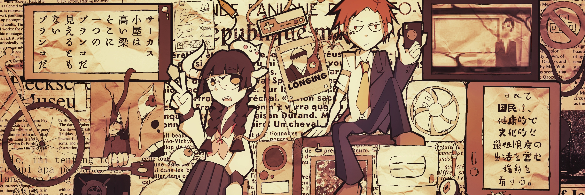

U4
紹介
ゆうしと読みます。黝嗣です。
恩師を継げるような人間になりたいのでこの漢字にしたのですが、皆様全然読んでくれないのでU4と表記しています。SFが大好きですが、それほど現実世界では過激な人間ではありません。多分。
メインの「+81」シリーズを中心に、一次創作中心の小説や漫画やらイラストやらをいろいろ書いています。
外部活動
twitter@ushirowomuitara
PixivU4

ゆうしと読みます。黝嗣です。
恩師を継げるような人間になりたいのでこの漢字にしたのですが、皆様全然読んでくれないのでU4と表記しています。SFが大好きですが、それほど現実世界では過激な人間ではありません。多分。
メインの「+81」シリーズを中心に、一次創作中心の小説や漫画やらイラストやらをいろいろ書いています。
twitter@ushirowomuitara
PixivU4